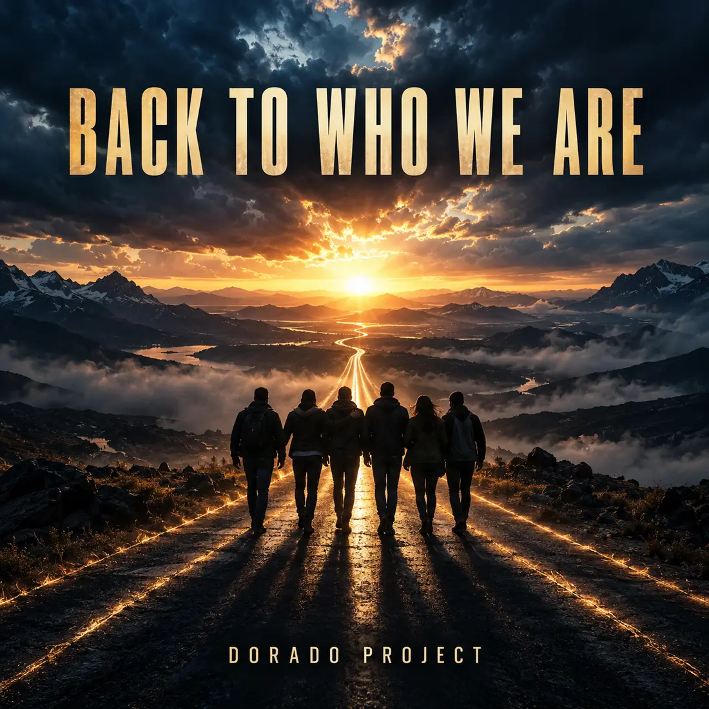

SINGLE · STADIUM ROCK
Back to Who We Are
Arena rock / Alternative rock
An epic stadium anthem about friendship, losing your way and always finding the road back to who you truly are.
Listen on Spotify →
SINGLE · STADIUM ROCK
Arena rock / Alternative rock
An epic stadium anthem about friendship, losing your way and always finding the road back to who you truly are.
Listen on Spotify →From synthpop to rock: explore more tracks and the story behind Dorado Project.
Explore all tracks →